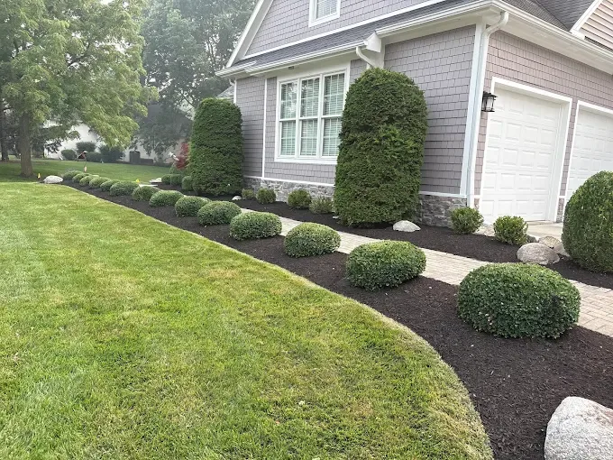
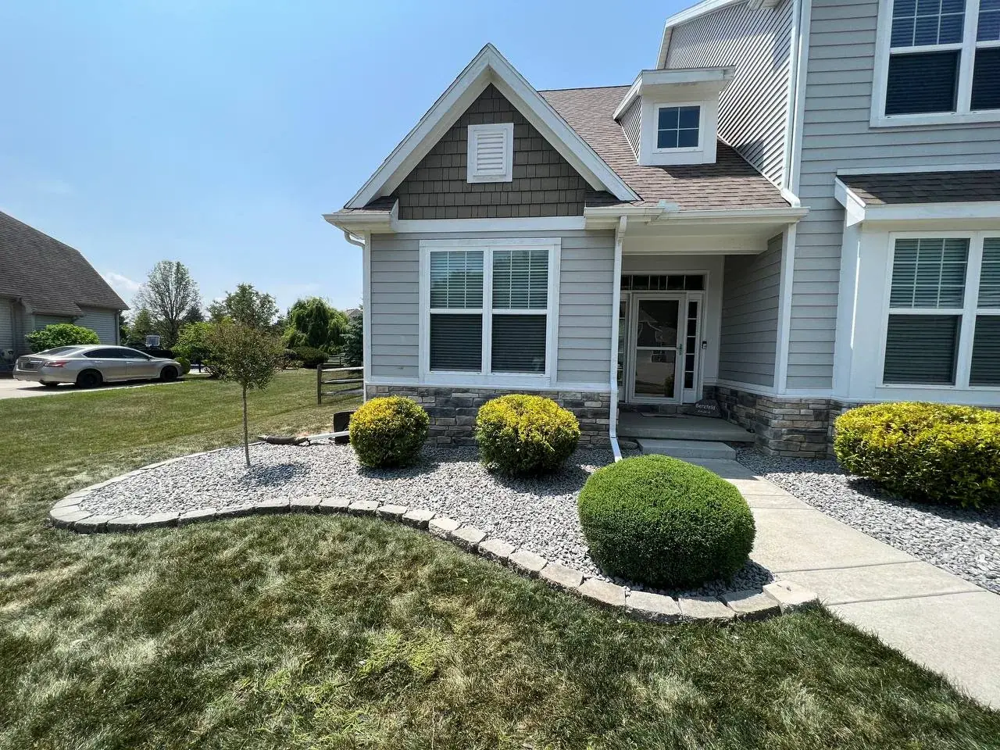
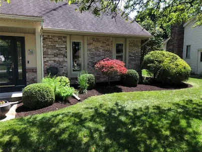
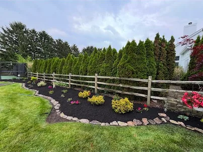
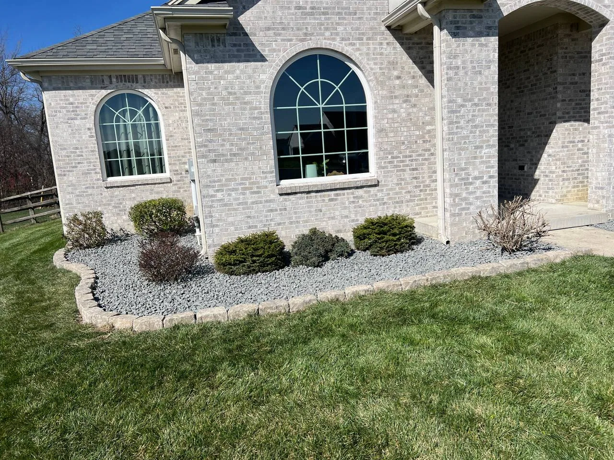
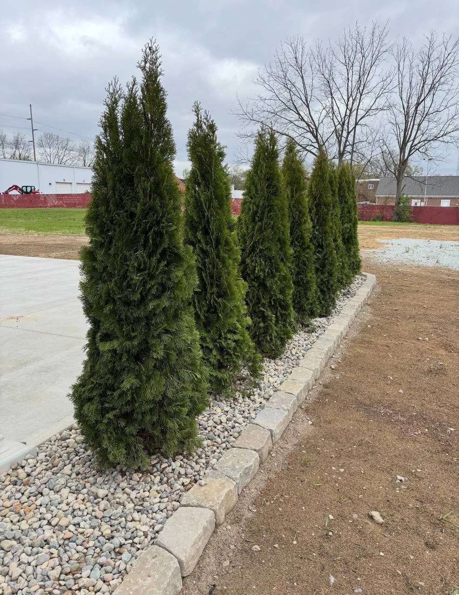

★★★★★
“We had a crew out to clean out some very overgrown and junk filled corners of the yard. They did great and were friendly and efficient. Would definitely hire them again.”Nat B

Home / Services / Shrub & Hedge Trimming
Shrub, bush, and hedge trimming
Terramorph trims and shapes shrubs, bushes, and hedges for homes and businesses in Perrysburg, Toledo, Maumee, Sylvania, and across Wood and Lucas County. Overgrown foundation plantings cut back, hedges squared up, and the clippings hauled away. Free estimates.
4.9★★★★★220+ Google reviewsGreat work at a fair price. They did what they said they were going to do, when they said they would do it.Richard Hansen
A lot of companies tell you what they are going to do. This company far exceeded their word.jon mercurio
Attention to detail was 2nd to none!Adam Raider
They did an excellent job and completed the same day. I would highly recommend them.Teresa Thompson
10/10 Company, the boys made my house look great. Customer Service is great, best deal on the market.Alejandro Urrea
Great work very accommodating and extremely professional will definitely have them do all my future work.Pete Detgen
Great, professional group of guys!Josh Johnson
They did a fantastic job for me. I will recommend them to colleagues.Dominic Urquiola
Fast and reliable. Ty did excellent work and very reasonable cost. I would not hesitate to suggest him to others.Larry Calcamuggio
Amazing service every time and prompt to all appointments.CJ Miller
Sound familiar?
What you get

01What we trim
Most properties have a mix: evergreen shrubs along the foundation, a hedge or privacy row on one side, and a few flowering shrubs that have gotten bigger than anyone planned. Terramorph trims all of it in one visit, cleans out the beds underneath, and hauls the brush away.
The work is done from the ground with hand pruners, loppers, and hedge trimmers. The goal is a shrub that looks like itself, only smaller and tidier, not a row of identical green boxes unless a formal hedge is what you want.

02Timing
There is no single best month. The right time depends on when the shrub blooms and whether it flowers on old wood or new growth. Getting it wrong does not usually kill the plant. It just costs a year of flowers or leaves it looking chopped.
That is why a fall cleanup from Terramorph includes only light shaping, and why spring-flowering shrubs are left alone until they have bloomed.

03Hedges
A hedge that is sheared straight up and down, or wider at the top, shades its own lower branches. Over a few years the bottom thins out and goes bare. A hedge trimmed slightly narrower at the top lets light reach all the way down, and it stays green to the ground.
Different hedge plants forgive different things. Yew and privet can take a hard cut and grow back. Boxwood does best with light shearing plus some thinning so air moves through it. Arborvitae only grows from green wood, so it is trimmed within the green and never cut back into the bare brown interior.
Overgrown shrubs
Shrubs covering the windows or crowding the front walk are the most common reason people call. There are three honest answers, and which one fits depends on the plant.
Some shrubs can simply be reduced, taken down in size over one or two seasons so they are never stripped bare at once. Multi-stem shrubs like lilac, forsythia, spirea, and red twig dogwood can be renewed by removing the oldest, thickest stems at the ground so younger growth takes over. And some shrubs, usually evergreens planted too close to the house decades ago, are simply too big for the spot. Those are better removed and replaced with something that fits, which is a landscape design conversation.
What this service is not
Terramorph does not do tree removal, tree climbing, large-limb cutting, or stump grinding. If the job needs a chainsaw overhead, a bucket truck, or a climber, it belongs with a tree service.
What we do handle is everything in the beds that can be trimmed safely from the ground, along with the cleanup around it: bed edges, weeds, old mulch, and the brush pile at the end.

06What it costs
Terramorph looks at the property and gives a free estimate. Photos of the beds are usually enough to get started.
The number comes down to how many shrubs there are and how big, how long it has been since they were last trimmed, the length and height of any hedge, how easy it is to get around the beds, and how much brush has to be loaded and hauled. Trimming that is part of regular maintenance takes less time per visit than a one-time rescue of beds that have been let go.
How we work
A walk around the beds first, so you know what will be cut, how far, and what should wait for a better time of year.
We look at each shrub, what it is, and how far it can come back.
What gets shaped, what gets cut back hard, and what waits until after it blooms.
Hand pruners, loppers, and hedge trimmers, working from the ground.
Beds raked out, walks blown off, and the brush hauled away.
Recent work

Reviews
“We had a crew out to clean out some very overgrown and junk filled corners of the yard. They did great and were friendly and efficient. Would definitely hire them again.”Nat B
“We are absolutely thrilled with the work Brad and his team completed! They completely redesigned our flower beds, providing us with a potential layout drawing, guiding us in selecting the right flowers, and executing everything perfectly. Besides the excellent craftsmanship, Brad and his team are genuinely kind and considerate.”Kate Vallerand
“Ty and his crew are a great group of young professionals. Their work was well planned and executed with great attention to detail. I would not hesitate to recommend them for any level of landscaping project you may have.”R.J. Rajner
Questions homeowners ask
Still wondering about something? Call 419-873-6801, 7 a.m. to 8 p.m.
Terramorph trims shrubs, bushes, and hedges for homes and businesses in Perrysburg, Toledo, Maumee, Sylvania, Rossford, Waterville, Whitehouse, Holland, Bowling Green, Oregon, and the rest of Wood and Lucas County, Ohio.
It depends on the plant. Shrubs that bloom in spring, like lilac, forsythia, and azalea, are trimmed right after they flower. Shrubs that bloom in summer on new growth, like panicle hydrangea and rose of Sharon, are cut in late winter or early spring. Evergreen shrubs and hedges are shaped after the spring flush of growth. Heavy cutting stops by late summer so new growth is not killed by frost.
Usually, yes. Many shrubs can be brought back down over one or two seasons, and multi-stem shrubs like lilac, forsythia, and spirea can be renewed by taking out the oldest stems at the ground. Some evergreens will not regrow from bare wood, so a shrub that has badly outgrown its spot is sometimes better replaced. We tell you which it is before anything is cut.
Only if it is cut at the wrong time. Lilac, forsythia, azalea, and bigleaf hydrangea set next year's flower buds over the summer, so shearing them in fall or winter removes the flowers. Terramorph leaves those alone in fall and trims them after they bloom. Panicle and smooth hydrangea bloom on new growth and can be cut back in late winter.
Not far. Arborvitae only grows new foliage from green wood. If it is cut back into the bare brown interior, that section stays bare. It can be shaped and kept in bounds, and the top can be brought down a modest amount, but a hedge that is several feet too tall or wide usually cannot be shrunk to half its size.
Yes. Clippings and brush are raked out of the beds, blown off the walks and drive, and hauled away with the crew.
No. Terramorph does not do tree removal, tree climbing, large-limb cutting, or stump grinding. This service covers shrubs, bushes, and hedges that can be trimmed safely from the ground. For tree work, call a tree service.
The number and size of the shrubs, how overgrown they are, the length and height of any hedge, access around the beds, and how much brush has to be hauled away. Terramorph looks at the property and gives a free estimate.
Terramorph at a glance
Terramorph LLC is a landscape design and build company based in Perrysburg, Ohio, founded by brothers Ty and Trent Lincoln. We handle shrub and hedge trimming along with patios, drainage, landscape beds, lighting, lawn care, cleanups, and snow removal for homes and businesses across Wood and Lucas County. 4.9 stars from more than 220 Google reviews, BBB accredited, and estimates are free.
Keep reading
Free estimate
Free estimate
Send project details through the quote form, or call directly for urgent service questions and scheduling.
Call now or jump straight to the quote request form.